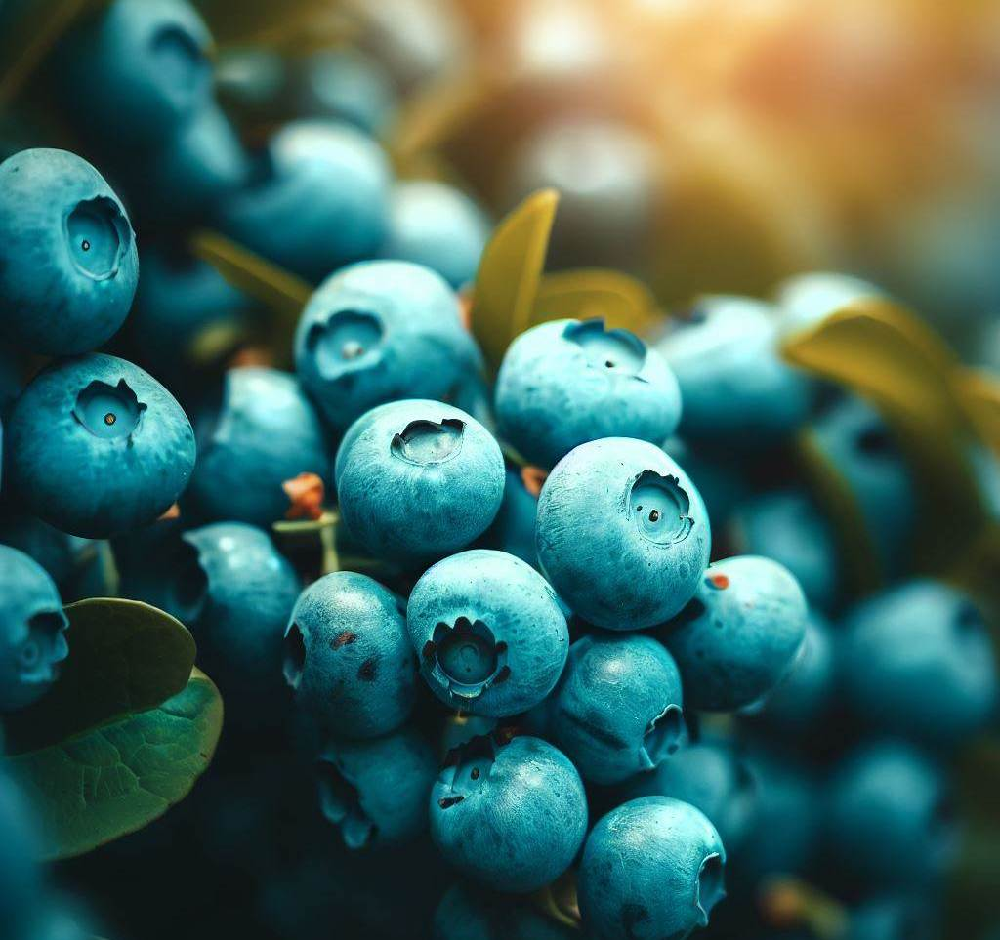
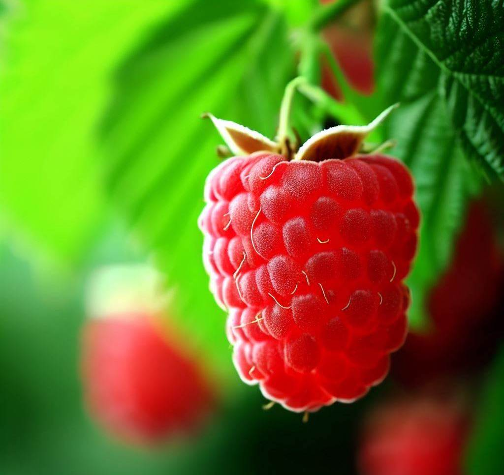

We produce yummy berries!
What is it?
Welcome to our berry farm, where we sell a wide variety of fresh, juicy berries! Located in the heart of San Jose, our farm is committed to providing the highest quality berries that are picked at the peak of ripeness. Whether you're looking for strawberries, blueberries, raspberries, or blackberries, we have it all.
How we do?
At our farm, we take pride in using sustainable and organic farming practices to grow our berries. Our fields are carefully tended to ensure that our berries are free from harmful chemicals and pesticides, making them safe and healthy for you and your family to enjoy.
We believe that the best berries come from the best care, which is why we put so much effort into ensuring that our berries are of the highest quality. From planting to harvesting, we take care to ensure that every berry is perfect.
Taste it!
So if you're looking for delicious, fresh berries, come visit us at our farm! We can't wait to share our delicious fruits with you.